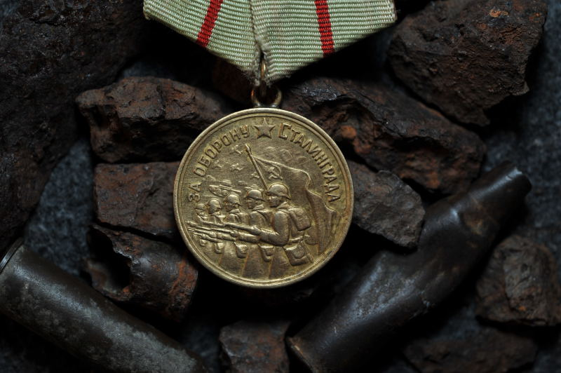
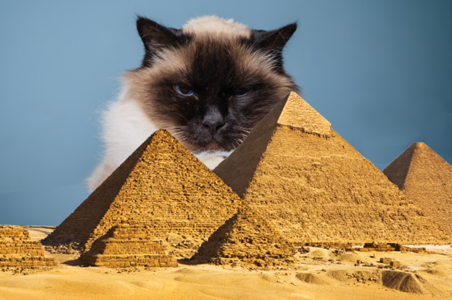
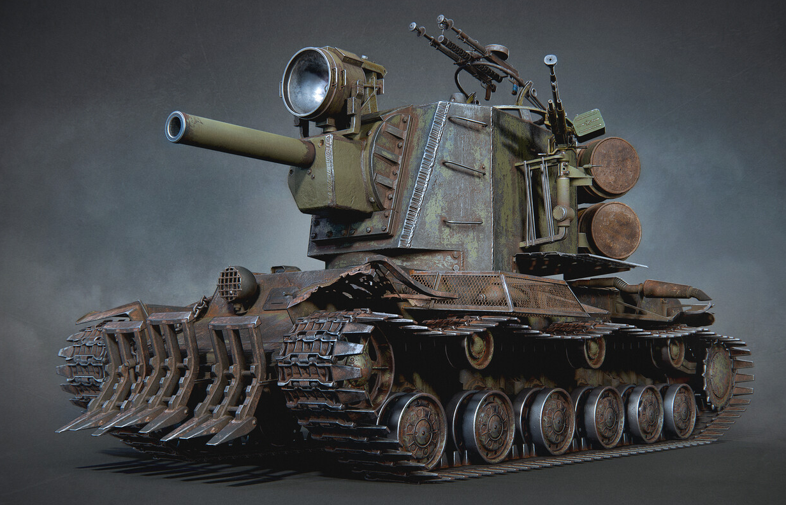

C 12 по 17 августа 1942 года
Вторая Московская конференция — пятая по счёту и вторая из четырёх московских конференций стран антигитлеровской коалиции.
США представлял Аверелл Гарриман, специальный представитель президента США в Великобритании и СССР, Великобританию — Уинстон Черчилль, СССР — Иосиф Сталин.
Битва происходила с 17 июля 1942 года по 2 февраля 1943 года
Cуммарное количество потерь советских войск 1 129 619.
Сталинградская стратегическая оборонительная операция. Длилась с 17 июля — 18 ноября 1942 года (125 суток) на фронте протяженностью до 520 км, глубина отступления советских войск составила до 150 км.
В 1758 году Карлом Линнеем в «Системе природы» домашней кошке было присвоено биномиальное название Felis catus. Иоганн Христиан фон Шребер в 1775 году дал дикой кошке название Felis silvestris
В настоящее время в мире насчитывается около 600 млн домашних кошек.
Выведено около 200 пород.
Советский тяжёлый танк шестого уровня. Обладает отличным вооружением, но слабым бронированием и малой дальностью обзора.
На выбор в танк можно поставить как сбалансированное 107 мм орудие ЗиС-6, так и 152-мм гаубицу М-10 с высоким уроном, но низкой точностью и долгой перезарядкой.
Урон 910.
| ПК | ||
|---|---|---|
| Модель | Комплектация | Цена |
| hyperpc | NVIDIA GeForce RTX 3050 Ti | 150.000 |
| NVIDIA GeForce RTX 3070 | 170.000 | |
| ASUS | NVIDIA GeForce GTX 1080 Ti | 100.000 |
| NVIDIA GeForce GTX 1080 | 80.000 | |